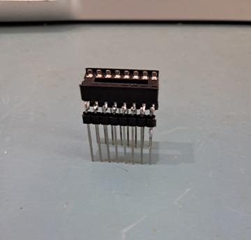
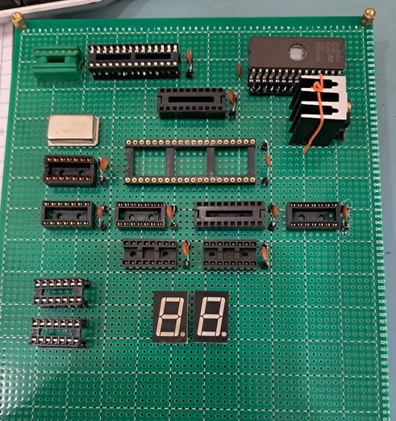
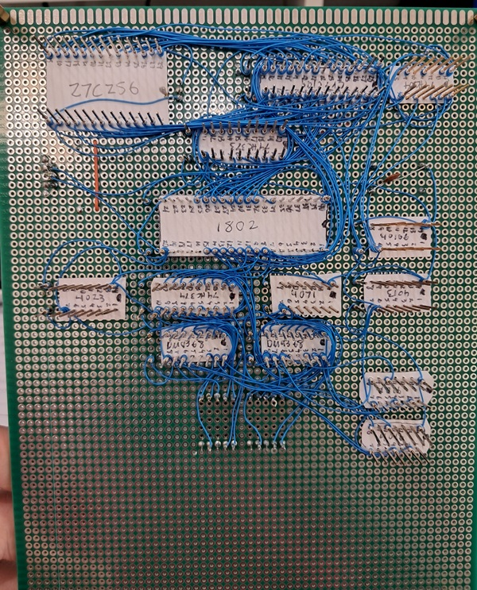

In July of 1976, Popular Electronics published the original article on building the COSMAC Elf, a simple microcomputer trainer that you could build for as little as $80, which comes out to just under $500 in 2025, nearly 50 years later. My dad says he remembers reading the article in the back of my grandparents' car on the way to the grocery store. I first stumbled across the Elf while I was in high school (circa 2009 or so) reading old electronics magazines. I wanted to build it then , but I had no money, no way to order parts, and no idea where to start, so it remained a dream for years.
Fast forward to today, and I decided that it was finally time to revisit the COSMAC Elf and build one for myself. I have dabbled in programming, some for PCs, but mostly for Arduino. I also had a general idea of how computers work, but I wanted a project to better wrap my mind around basic computer architecture, as well as a chance to dip my toe into assembler. The Elf seemed like the perfect way to do both.
It turns out, if you want to build an Elf today, there are several convenient options available to help you out. There are numerous board gerbers that are readily available for download, along with the associated BOMs. Even nicer are the 1802 Membership Card and the MemberChip Card kits made and sold by Lee Hart. These kits come with all necessary parts and a nice pc board, as well as a very detailed assembly and user manual. The manuals are a wonderful resource, even if you don't build a Membership Card kit.
Lee Hart's impressive kits and projects can be found here at his website./p>
However, I was looking for a more hands-on experience than building a kit, so I opted to go the old fashioned way and wire wrap my own board. I ordered a big piece of perf board from eBay and the logic chips from Aliepxress. One of the first hurdles was to come up with enough wire wrap IC sockets for the project. I had a surprisingly large number of them already in my junkbox, but not enough for the whole project. After paying an insultingly high price for the 40 pin socket for the processor, I decided there must be a cheaper way. I discovered that you can by 20mm header pins on Amazon. I bought a pack of them and a box of regular IC sockets. I reasoned that all I had to do was solder the longer pins to the leads of the IC sockets, and I would be in business. This turned out to be trickier than I expected, but in the end, I was able to make it work.



For the schematic, I used the VCF Elf schematic posted by Lee Hart as my main guide, making changes to fit what I wanted or had available. I opted to use the CY7C199 32k SRAM instead of the 5101 RAMs that are used in the original. I also included provision for a 32k ROM. The 1802 multiplexes it's 8 address lines, meaning that if you address more than 256 bytes of memory, you have to latch the upper 8 bits before the lower 8 bits of the address are read out. I shamelessly copied the 74HC373 circuit from the 1802 Membership Card for the this. Address line 15 is used to chip-enable the desired memory chip (RAM or ROM). Both the CY7C199 RAM and the 27C256 ROM that I intend to use are active-low devices, so the input to one of them has to be inverted to keep them from both being on at the same time. I ran A15 directed to the RAM's /CE so that it would be active from 0-32kb. I inverted A15 before running it to the ROM's /CE so that it would be active from 32-64kb. This follows standard convention on most other Elf builds I have seen. I will note that Lee Hart uses the TPB timing signal from the 1802 to chip enable the RAM. This reduces the amount of time it is on and reduces power consumption. I plan to run my Elf from a wall-wart, so power consumption is not a concern for me. I elected to omit that functionality for simplicity's sake.
The original Elf used TIL311 displays from TI. These are super cool LED displays that not only look great, but conveniently have built-in logic to convert from binary to hexadecimal. Unfortunately, these are nearly unobtanium today, so I had to come up with another option. The VCF Elf omits the hexadecimal display and just provides binary output via LEDs mounted over the input switches. If you do want a hexadecimal display, the easiest way to get one is to use a microcontroller to do the necessary binary to hex conversion and drive a regular 7-segment display. I wanted to have the hex display, but I couldn't bring myself to include a PIC or Atmega328 that was faster and more powerful than the 1802 just to drive the display. I instead opted for the DM9368, which is a binary to hexadecimal converter that can directly drive a common cathode 7 segment display. The DM9368 is obsolete, expensive, and hard to get, but less so than the TIL311. Each chip handles 4 bits, so two are used, one for each display.